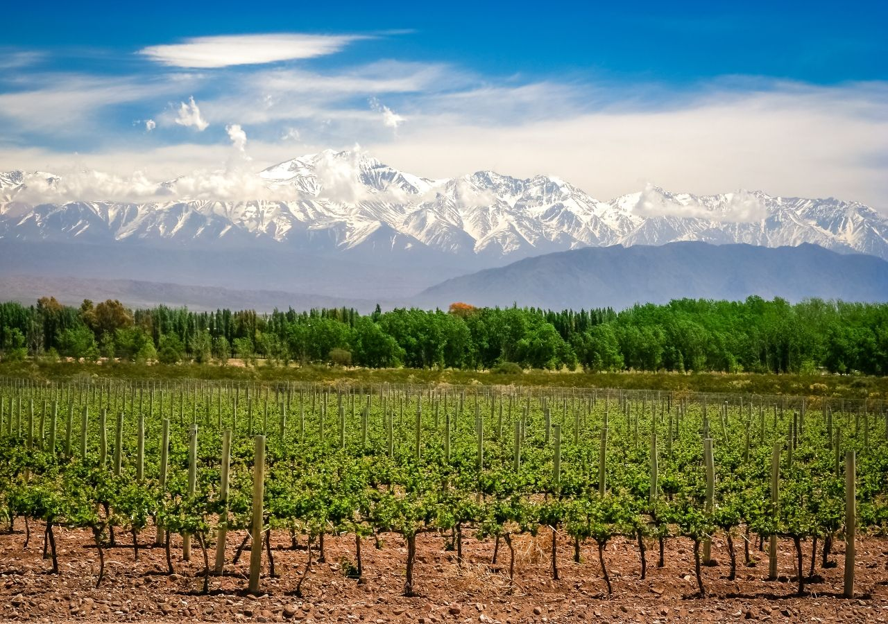

Mendoza es una ciudad del oeste de Argentina y capital de la provincia homónima. Se localiza en la llanura al este de la cordillera de los Andes.
Es una de las principales ciudades del país, y con su aglomerado urbano, denominado Gran Mendoza alcanza una población total que supera el millón de habitantes.
Es un principal polo industrial, un punto estratégico fundamental de las relaciones del Mercosur. La actividad económica está vinculada al comercio, la industria de servicios y principalmente la actividad turística en torno a la industria vitivinícola por lo cual junto con otras ciudades del mundo, es denominada «Capital Internacional del Vino». Fue una ciudad cosmopolita, debido a la gran cantidad de inmigrantes principalmente italianos y españoles arribados entre el último cuarto del siglo XIX y el primer cuarto del siglo pasado, y aunque ciertas minorías de inmigrantes de otros orígenes, como ser árabes o franceses, se radicaron en aquellos tiempos aquí, la mayoría de los mendocinos, como casi todos los argentinos, proceden de la confluencia de españoles, italianos y aborígenes. En la actualidad hay un número considerable de inmigrantes de países de la región como Bolivia, Chile, Paraguay y Perú. Posee una muy variada oferta cultural y actividad nocturna, es una ciudad turística por excelencia y un destacado centro universitario. Su fisonomía tiene una muy notoria influencia europea, como el resto de Argentina, lo que se nota en los estilos arquitectónicos, también amplias avenidas y calles arboladas.
Primera Fundacion: 2 de marzo de 1561, (461 años y 21 días), (por Pedro del Castillo)
Fundacion Translado: 28 de marzo de 1561, 459 años, 11 meses y 26 dias.
En 1551, enviado por el gobernador y capitán general de Chile, Pedro de Valdivia, Francisco de Villagra es el primer español en explorar la región cuyana, al mando de ciento ochenta hombres. El descubridor se relacionó de buena manera con los indios huarpes, y habiendo pasado el invierno junto a ellos, regresó a Chile. Muerto Valdivia, y a poco de haber sido destituido el propio Villagra como gobernador de Chile, el nuevo gobernador, García Hurtado de Mendoza, hijo del Virrey de Perú Andrés Hurtado de Mendoza, encomendó al capitán Pedro del Castillo para que fundara y poblara Cuyo.
El 2 de marzo de 1561, fue fundada por el Capitán españli Don Pedro Ruiz del Castillo, por expresa orden del Gobernador de la Capitanía General de Chile, Don García Hurtado de Mendoza, en cuyo homenaje la ciudad lleva su nombre.El 28 de marzo de 1562, una nueva expedición al mando del capitán Juan Jufré, intenta eliminar lo hecho por Castillo y traslada la ciudad al Suroeste, por encontrar el lugar más competente y rebautiza a la ciudad con el nombre de "Resurrección - Provincia de Huarpes"
El clima de Mendoza es árido. Las temperaturas presentan una importante oscilación anual y las precipitaciones son escasas. El verano es cálido y húmedo, es la época más lluviosa y las temperaturas medias están por encima de los 25 °C; en esta estación es común que haya tormentas repentinas de verano con abundante caída de agua, y hasta granizo. El invierno es frío y más seco, con temperaturas medias por debajo de los 8 °C, heladas nocturnas periódicamente y escasas precipitaciones. En el centro de la ciudad no se da caída de nieve, siendo esto estrictamente en la ciudad, ya que la fuerte isla de calor eleva varios grados la temperatura mínima; en cambio, en ciudades del Gran Mendoza se da hasta 3 veces por año. Durante el invierno de 2007, nevó 6 veces en pleno centro de la ciudad, en circunstancias que hacía más de 20 años que esto no ocurría.
La ciudad propiamente dicha, que coincide exactamente con la jurisdicción del históricamente conocido como Departamento Capital —antigua denominación legal, en desuso, para la actual Municipalidad de la Ciudad de Mendoza—, actualmente tiene 114 822 habitantes, lo que representa un aumento (+3,45 %) con respecto a los 110 993 habitantes (Indec, 2001) pero aproximadamente un 5,59 % menos que los 121 620 habitantes (Indec, 1991) con los que contaba en 1991.
Este estancamiento demográfico es producto de la inexistencia de lugares disponibles para dar cabida al crecimiento poblacional, a lo que se suma una tendencia general de la población a abandonar el centro, los cuales son ocupados por oficinas y comercios en su lugar.
Dentro de la conurbación conocida como el Gran Mendoza, que pasó de 848 660 habitantes (Indec, 2001) a 1 086 066 habitantes (Indec, 2010), lo que equivale a un crecimiento intercensal (2001-2010) de un 21,8 % (y corresponde una moderada tasa media anual del 0,87 %), la Ciudad ocupa el cuarto lugar por cantidad de habitantes y por las causas anteriormente mencionadas, en un lapso relativamente breve llegará a ser la jurisdicción menos habitada del Gran Mendoza.
| Intendente | Periodo | Partido |
|---|---|---|
| Julio César Rivera | 10 de diciembre de 1983 - 10 de diciembre de 1987 | UCR |
| Victor Fayad | 10 de diciembre de 1987 - 10 de diciembre de 1991 | UCR |
| Roberto Iglesias | 10 de diciembre de 1991 - 10 de diciembre de 1995 | UCR |
| Roberto Iglesias | 10 de diciembre de 1995 - 10 de diciembre de 1999 | UCR |
| Raúl Vicchi | 10 de diciembre de 1999 - 10 denciembre de 2003 | UCR |
| Eduardo Cicchitti | 10 de diciembre de 2003 - 10 denciembre de 2007 | UCR |
Araya Guadalupe 4º1º